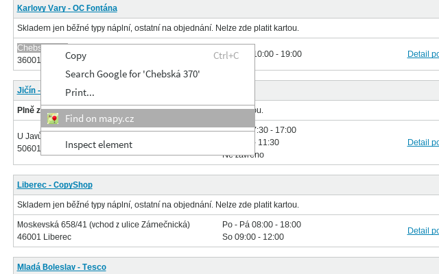

Simple chrome context menu extension to find stuff on mapy.cz
Chorme-ext-mapycz je jednoduché rozšíření kontextového menu prohlížeče Chrome, které umožňuje hledaní vybraného textu na serveru http://mapy.cz/. Jednoduše otevtře nový "tab" přímo s výsledky hledání.
Toto rozšíření je pro všechny koho nebaví dělat copy&paste aby našel adresu na http://mapy.cz/
Nejlepé si rozšíření nainstalujte přímo z chrome webstoru nebo případně případně ze zdrojových textů, viz odkaz výše.
Prosím pro hlašení chyb, návrhů nebo čehokoli dalšího použijte chrome webstore podporu nebo přímo github issues.
